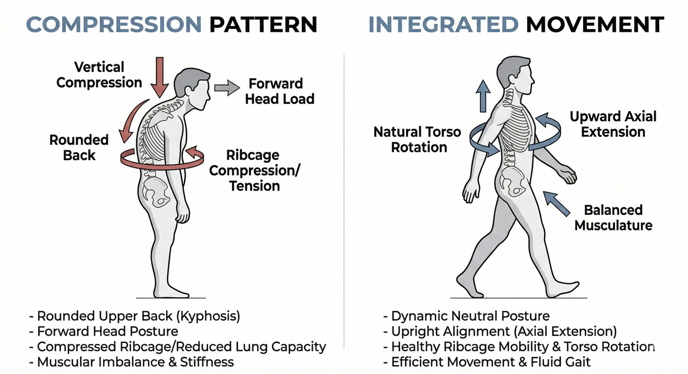

If you’ve noticed your upper back rounding more over time, you’re not imagining it.
It usually starts subtly. You feel a bit stiff when you wake up. Your shoulders feel tight by midday. Sitting upright takes effort. Standing tall doesn’t feel natural anymore.
At some point, you start calling it a “hunchback.”
And like most people, you try to fix it the obvious ways. You stretch your chest. You try to pull your shoulders back. You might even do a few posture exercises you saw online.
But nothing really sticks. That’s because what you’re dealing with isn’t just posture. It’s a pattern.
Why Your Upper Back Is Rounding in the First Place
Most people are told their posture is bad because they sit too much or because their chest is tight.
That’s not wrong, but it’s incomplete.
Your body is constantly adapting to the positions and movements you repeat. If your day is made up of sitting, looking down, and moving in very limited ways, your body doesn’t just get “tight.” It reorganises itself around those demands.
Over time, your system starts to favour positions that require less coordination.
Instead of rotating through your torso when you move, you start to move as one block. Instead of distributing force through your hips and ribcage, you start to absorb it through your spine. Instead of maintaining shape under load, your body collapses into the easiest available position.
That collapse often shows up as a rounded upper back.
So what looks like a simple posture issue is actually your body choosing the most efficient strategy it has available, even if that strategy comes with long-term consequences.
The Missing Piece: Rotation
One of the biggest things people lose is the ability to rotate well.
Rotation is not just a sports skill. It’s a fundamental part of walking, breathing, and transferring force through the body.

When rotation is working properly, your ribcage and pelvis move in a coordinated way. Your weight shifts from one side to the other. Muscles lengthen and shorten in a rhythm that allows you to move efficiently without overloading any single area.
When rotation is missing, something else has to take over.
That “something else” is usually compression.
Instead of moving through space, your body starts to hold itself together. The ribcage becomes more rigid. The upper back stiffens. The shoulders round forward. The neck starts doing more work than it should.
This is why a lot of people describe the feeling as being “tight” or “jammed.” It’s not just tightness. It’s a system that has lost its ability to move fluidly.
Why Stretching and Posture Cues Don’t Fix It
Stretching your chest or trying to “stand up straight” can feel helpful in the moment. But those approaches don’t change how your body actually functions.
If your system still lacks rotation, still doesn’t transfer load properly, and still relies on compensation, it will always return to the same position. That’s why you can stretch every day and still feel tight.
Your body isn’t resisting change. It’s protecting you. It’s choosing the most stable option it knows, even if that option creates discomfort over time. Telling yourself to “sit up straight” is like trying to override a system without upgrading it.
Eventually, it defaults back.
Why Gait Matters More Than You Think
One of the most overlooked pieces of posture is gait, or how you walk.
Walking is the most repeated movement you do every day. It reflects how well your body can coordinate rotation, balance, and load transfer.
If your gait is inefficient, you’re reinforcing the same compensations thousands of times per day. For example, if your torso doesn’t rotate properly when you walk, your upper body may stay rigid while your lower body moves underneath it. That disconnect often leads to more tension in the upper back and shoulders.
Over time, that repeated pattern contributes to the rounded posture you’re trying to fix. This is why posture isn’t something you can fix in isolation. It’s an output of how you move, not something you can force into place.
What Actually Needs to Change
To change a hunchback pattern, you don’t just need to “correct posture.” You need to change the way your body organises movement.
That means restoring rotation where it’s missing, improving how your ribcage and pelvis interact, and teaching your body how to distribute force more efficiently.
It also means building strength in a way that supports those patterns, not reinforces the old ones.
This is not about doing more exercises. It’s about doing the right things, in the right sequence, with the right intent.
When that happens, posture starts to change as a side effect.
Not because you forced it, but because your body no longer needs to compensate in the same way.
What Progress Feels Like
Real change doesn’t feel like suddenly “fixing your posture.”
It feels like your body becoming easier to live in.
You might notice that you don’t feel as stiff when you wake up. That sitting upright takes less effort. That your shoulders aren’t constantly pulling forward. That walking feels smoother and less restricted.
These are small shifts, but they compound and over time, they’re what lead to visible changes in posture.
Where to Start

If your upper back keeps rounding, or your posture never seems to hold, there’s usually a reason beneath the surface.
Trying to fix it on your own often leads to guessing, and guessing usually leads to more frustration.
👉 Book an initial assessment at Functional Patterns Brisbane (Bulimba)
We’ll look at how your body actually moves, identify where the breakdown is happening, and map out a clear path forward.